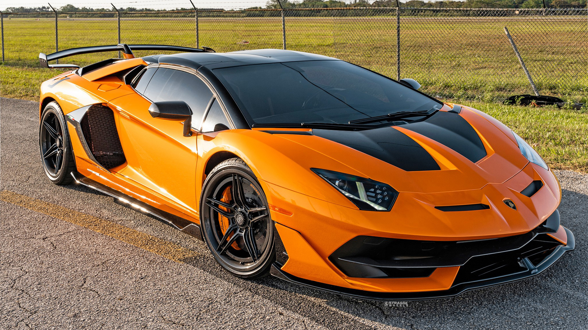
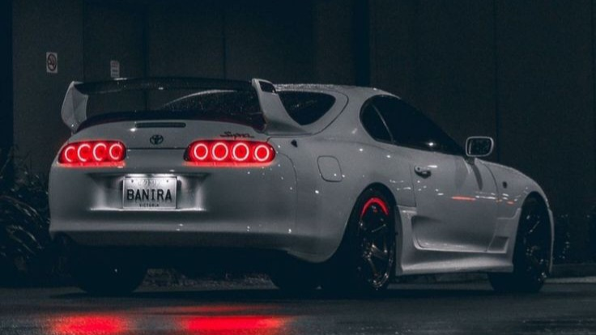

World's best top 10 car brands in terms of revenue

In this article, we have prepared the list of top car brands 2023 in the world based on business parameter of Revenue. The top car companies, or automotive manufacturers, are part of one of the world’s most important sector if we see the revenues generated by them. These top car brands includes a wide range of companies and organizations involved in the design, development, manufacturing, marketing, and selling of motor vehicles.
Electric Vehicles (EV) and Self Drive cars coupled with AI and IoT continue to be emerging focus area for the global car companies in 2023 and this trend will continue. The best car companies in the world sell a range of vehicles like sedans, hatchbacks, SUVs, trucks, buses, electric vehicles etc. The car industry heavily relies on the production of cars and trucks by major car manufacturers worldwide. As technology innovations continue to arise, the competition to become a top car brand is increasing. Connected cars are leading the way in defining the next era for these major car manufacturers. These car brands are not only concerned with selling cars but also with providing an end-to-end customer experience that covers everything from sales to services.
10. Nissan Motor
Revenue: $75 Billion
Nissan Motor Corporation is a Japanese automaker having been established in the year 1933 at the Yokohama city in Japan. Since then the company has evolved itself into a truly global company and has a strong global presence across all continents. The company is involved in the sales and manufacturing of automotive products such as automobiles, trucks and buses as well as other related auto-products. The company has its manufacturing facilities in as many as 20 countries worldwide and customers in more than 160 different nations. The company owns a diverse range of world renowned brands which operates to produce a wide variety of products. The company’s well known revolutionary products ranges from the 100% electric Nissan Leaf to the super-performer Nismo. The company is also heavily investing in a portfolio of "green" technologies which includes clean diesels, efficient internal-combustion engines and hybrids. The company also gives special focus on the producing the zero emission vehicles, such as electric cars and fuel cell vehicles. Nissan is also known for its operations through forming strategic alliances. Nissan motors is among the top car brands in the world.
9. BMW group
Revenue: $86 Billion
BMW group abbreviated as Bayerische Motoren Werke Group is one of the leading manufacturers of premium automobiles and motorcycles and one of the top car brands in the world. Besides, the company also acts as the provider of premium financial and mobility services. The company trace back its inception in the year 1916 with its current headquarter in Munich, Germany and it has evolved itself as a truly global company with as many as 30+ production and assembly facilities in many countries and a global sales network. The company’s total employee strength is 120,000+ out of which around 90 percent of the employees are in automobile segment. BMW major models includes BMWi which is electric vehicles leading the way in alternative drive trains, lightweight design and aerodynamics, BMW M which is a pioneer in authentic motor-racing functionality with exclusive, sporty aesthetic appeal, Mini, Mini John Cooper Works, Rolls-Royce Motor Cars which is a very popular premium segment automobile and Motorrad, the motorcycle brand. The company was the first to design aircraft engine with aluminum piston in the year 1917. BMW's focus is on Electric Vehicles which continue showing consistent growth year on year. Strength of this company comes from its strong culture. Culture which imbibes passion and enjoyment, teamwork and personal development, equal opportunities, diversity and their beliefs-belief in their people, performance, effectiveness, fairness, respect, sustainability, society and independence.
8. Hyundai
Revenue: $96 Billion
South Korean automaker, Hyundai was established in the year 1967. It has headquarter located at Seoul, South Korea. They are into manufacturing and distribution segment of automobiles, providing financial services in the form of credit and insurance to its customers and also in manufacturing of railways. Hyundai has popular cars in every segment from hatchbacks to sedans to SUVs which includes i10 series, Elantra, Accent, Civic and several others. The company employs around 60,000 people globally. With the incorporation of the company in the year 1967 to having a history of 50 years, Hyundai has accomplished a lot in very few years. With the launch of Pony, first Korean passenger car in the year 1976 to entering into Canadian market in 1983, Pony became the bestselling car in both the nations because of its size and price. Later it entered US market in 1985 by exporting Hyundai excel. Later in the year 1998 it acquired Kia motors. With the philosophy to realize the dreams of mankind; it sets its vision 2020 to be the life time partner in this sector and provide new values and experiences as desired by its customers. Its philosophy is built on combination of three factors, first being taking up the unlimited sense of responsibility and then acting and realizing the possibilities to ultimately give respect to mankind. Hyundai is one of the top car brands 2023.
7. SAIC Motor
Revenue: $114 Billion
SAIC Motor Corporation Limited is the largest Chinese automaker enlisted in the Fortune 500 Global list. The company has made to the elite list twelfth time in a row, reflecting on the company’s ever-expanding business. The company is also considered as belonging to the “Big 4” Chinese top car brands owned by the government and has its headquarter in Shanghai, China but is operating worldwide. The company’s main business includes vehicles, components, auto trade & services, and financing. SAIC Motor has been dominating the auto market in China since 2006. The Company has a new SAIC plant in Thailand and is involved in constructing the vehicle and auto-parts park in Indonesian. The company also operates through many joint ventures with renowned brands. Along with VW, SAIC has sold more than two million cars in China alone. The company maintained the first place in the sales market of vehicles in China and successfully broke into top four companies with the largest sales volume of passenger vehicles in the domestic market.
6. Honda Motor
Revenue: $129 Billion
Honda Motor Company is a Japanese multinational automotive and motorcycle company with its presence all around the globe. They are into manufacturing and sales of automobiles, aircrafts and motorcycles and providing financial services which includes credit and insurance to its customers. Honda has about 89 plants in 33 countries and sells in around 140 nations employing a total of 30,000 people across the world. The most popular cars of Honda include Accord and Civic which are still continuing to grab the market with huge sales in North America. With 69 years of history, Honda motors made its first motor cycle in the year 1949. It went international in the year 1959 by establishing plant at America as American Honda Motor Co to becoming the largest selling car of the year 1993. Honda hasn’t stopped and dreams 50 years ahead of time to reduce its CO2 emissions by 30% by 2020 and they also want to employ cruise control in their cars to make collision a thing of past by 2040. Honda’s philosophy is built on Respect for individual and the three joys of giving. Respect for individual includes three sub pillars of initiative- Initiative to think creatively and not be bound by preconceived ideas, equality-treating each other with respect and providing equal opportunities to all and the third one being trust- mutual trust to help each other fulfill their responsibilities by sharing knowledge. The three joys of giving include joy of buying selling and creating the best products by the firm. Honda is thus one of the top car brands 2023.
5. General Motors
Revenue: $156 Billion
General Motors is a global automotive company established in the year 1908. With its global headquarter at Detroit, USA, the company operates in five continents across many countries. With an employee strength of 180,000 from 70+ nationalities, the company has a very diverse and dedicated team. General Motors functions with eight renowned distinctive brands across the globe which includes, Buick, GMC, Cadillac, Holden, Baojun, Wuling, and Jiefang. The company offers vehicles ranging from electric cars to heavy-duty full-sized trucks which talks volume about the firm’s global reach. The company has shown a remarkable performance the previous year. The company also created the affordable all-electric Chevrolet bolt EV which offers up to an EPA-estimated 230 miles of pure electric range on a full charge. The company has been appreciated multiple times for its quality and performance. General Motors designed the crash test dummies which is now a global standard for frontal crash testing among top car brands all over. It is also the first North American Auto Manufacturer to build a roll over test facility. General Motors is thus a leading car manufacturer.
4. Ford Motor
Revenue: $158 Billion
Ford Motor Company is an American multinational automaker incorporated in Delaware in the year 1919. The company started by acquiring the business of a Michigan company, also known as Ford Motor Company, which had been incorporated in 1903 to produce and sell automobiles designed and engineered by Henry Ford. Ford is one of the largest producers of cars and trucks in the world, with a strong proct line, which includes a wide range of vehicles, including cars, trucks, and SUVs. The company is known for its popular brands such as the Ford Mustang, F-Series trucks, and the Ford Explorer. The company is also involved in the production of commercial vehicles, such as buses and vans, as well as automotive components and systems. The company has operations in over 100 nations and has more than 150,000 employed. The company was one of the first to introduce mass-produced cars, and was instrumental in the development of the assembly line, which revolutionized manufacturing. The company has made continuous investments in R&D like autonomous driving and connected vehicles. Ford has a focus on becoming carbon neutral by 2050. Ford is also working to improve the sustainability of its operations and products, including by increasing the use of recycled materials and reducing waste. The brand has a strong reputation for quality and innovation, and its products are widely recognized for their reliability and durability.
3. Mercedes-Benz
Revenue: $190 Billion
Mercedes-Benz is one of the world’s biggest producer and supplier of premium cars and commercial vehicles all around the world. One of the largest producers of premium luxury cars, Mercedes-Benz’s history starts way back in 1886. It is headquartered at Stuttgart Germany. The company has strong presence through passenger vehicles, Mercedes-Benz Trucks, Vans, Buses and Financial Services the company has its global presence in multiple domains. Mercedes-Benz's strong product portfolio has a line of luxury cars, and also commercial buses and trucks. The company is also involved in the production of electric and hybrid vehicles, and has made significant investments in autonomous driving technology. The company's luxury vehicles are known for their high quality, innovative features, and cutting-edge technology. Mercedes-Benz's commercial vehicles, including the Freightliner and Western Star brands, are also popular and well-regarded in the transportation industry. The company plans to achieve carbon neutrality across its supply chain by 2039. It is also working to reduce its use of natural resources and improve the sustainability of its global business operations. Mercedes-Benz has been affected by the shift toward electric and hybrid vehicles, and has faced difficulty to keep up with competitors in this area. Inspite of all challenges, Mercedes-Benz remains a significant player in the automotive industry and is known for its focus on innovation, quality, and sustainability.
2. Toyota Motors

Revenue: $260 Billion
Toyota Motor Corporation is the largest automaker of the world. It is a Japanese multinational firm having a global presence. With its headquarter in Aichi, Japan, the company has grown to become one of the largest firm in terms of revenue.
Toyota motors is currently the world's largest automaker by volume, producing more than 10 million vehicles annually. It's product portfolio includes sedans, SUVs, trucks, and hybrids. The company is known for its reliable and fuel-efficient cars, with its hybrid vehicles, including the Prius, being particularly popular. The company has operations in more than 150 countries and has a strong workforce of over 300,000 individuals. As a part of its ever growing R&D, the company was one of the first to introduce mass-produced hybrid vehicles and has continued to lead the way in this area with its development of fuel cell technology. The company has set certain environmental goals, including a target of selling over 5 million electric cars by 2030 and achieving carbon neutrality in its operations by 2050. Currently it employs more than 350,000 people across the world who strives to provide the ultimate driving experience through performance, comfort, user friendly, safety and styling.
1. Volkswagen Group

Revenue: $284 Billion
Volkswagen Group is one of the largest manufacturer of the world with its headquarter in Wolfsburg, Germany. The group consists of two divisions: the automotive divisions and the financial services divisions. The company is currently the largest automaker in Europe and one of the largest in the world. As of today, Volkswagen Group is composed of 12 brands, including Volkswagen, Audi, Porsche, Bentley, Bugatti, Lamborghini, and others.
The brand has factories globally and sells vehicles in over 150 countries. Despite business challenges, Volkswagen continues to spend money in research & development in new technology, including electric and hybrid vehicles. The company has set a goal of becoming carbon-neutral by 2050 and is working to reduce its environmental impact through sustainable manufacturing and transportation practices